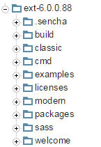
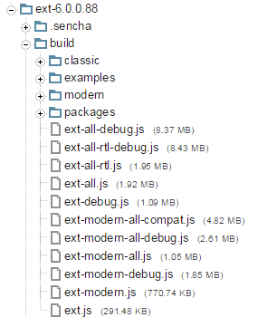
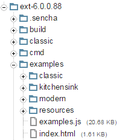

Upgrade - Ext JS 5 to 6
Many classes have shortcut names used when creating (instantiating) a class with a
configuration object. The shortcut name is referred to as an alias (or xtype if the
class extends Ext.Component). The alias/xtype is listed next to the class name of
applicable classes for quick reference.
Framework classes or their members may be specified as private or protected. Else,
the class / member is public. Public, protected, and private are access
descriptors used to convey how and when the class or class member should be used.
Public classes and class members are available for use by any other class or application code and may be relied upon as a stable and persistent within major product versions. Public classes and members may safely be extended via a subclass.
Protected class members are stable public members intended to be used by the
owning class or its subclasses. Protected members may safely be extended via a subclass.
Private classes and class members are used internally by the framework and are not intended to be used by application developers. Private classes and members may change or be omitted from the framework at any time without notice and should not be relied upon in application logic.
static label next to the
method name. *See Static below.Below is an example class member that we can disect to show the syntax of a class member (the lookupComponent method as viewed from the Ext.button.Button class in this case).
Let's look at each part of the member row:
lookupComponent in this example)( item ) in this example)Ext.Component in this case). This may be omitted for methods that do not
return anything other than undefined or may display as multiple possible values
separated by a forward slash / signifying that what is returned may depend on the
results of the method call (i.e. a method may return a Component if a get method calls is
successful or false if unsuccessful which would be displayed as
Ext.Component/Boolean).PROTECTED in
this example - see the Flags section below)Ext.container.Container in this example). The source
class will be displayed as a blue link if the member originates from the current class
and gray if it is inherited from an ancestor or mixed-in class.view source in the example)item : Object in the example).undefined a "Returns" section
will note the type of class or object returned and a description (Ext.Component in the
example)Available since 3.4.0 - not pictured in
the example) just after the member descriptionDefaults to: false)The API documentation uses a number of flags to further commnicate the class member's function and intent. The label may be represented by a text label, an abbreviation, or an icon.
classInstance.method1().method2().etc();false is returned from
an event handler- Indicates a framework class
- A singleton framework class. *See the singleton flag for more information
- A component-type framework class (any class within the Ext JS framework that extends Ext.Component)
- Indicates that the class, member, or guide is new in the currently viewed version
- Indicates a class member of type config
- Indicates a class member of type property
- Indicates a class member of type
method
- Indicates a class member of type event
- Indicates a class member of type
theme variable
- Indicates a class member of type
theme mixin
- Indicates that the class, member, or guide is new in the currently viewed version
Just below the class name on an API doc page is a row of buttons corresponding to the types of members owned by the current class. Each button shows a count of members by type (this count is updated as filters are applied). Clicking the button will navigate you to that member section. Hovering over the member-type button will reveal a popup menu of all members of that type for quick navigation.
Getting and setter methods that correlate to a class config option will show up in the methods section as well as in the configs section of both the API doc and the member-type menus just beneath the config they work with. The getter and setter method documentation will be found in the config row for easy reference.
Your page history is kept in localstorage and displayed (using the available real estate) just below the top title bar. By default, the only search results shown are the pages matching the product / version you're currently viewing. You can expand what is displayed by clicking on the button on the right-hand side of the history bar and choosing the "All" radio option. This will show all recent pages in the history bar for all products / versions.
Within the history config menu you will also see a listing of your recent page visits. The results are filtered by the "Current Product / Version" and "All" radio options. Clicking on the button will clear the history bar as well as the history kept in local storage.
If "All" is selected in the history config menu the checkbox option for "Show product details in the history bar" will be enabled. When checked, the product/version for each historic page will show alongside the page name in the history bar. Hovering the cursor over the page names in the history bar will also show the product/version as a tooltip.
Both API docs and guides can be searched for using the search field at the top of the page.
On API doc pages there is also a filter input field that filters the member rows using the filter string. In addition to filtering by string you can filter the class members by access level, inheritance, and read only. This is done using the checkboxes at the top of the page.
The checkbox at the bottom of the API class navigation tree filters the class list to include or exclude private classes.
Clicking on an empty search field will show your last 10 searches for quick navigation.
Each API doc page (with the exception of Javascript primitives pages) has a menu view of metadata relating to that class. This metadata view will have one or more of the following:
Ext.button.Button class has an alternate class name of Ext.Button). Alternate class
names are commonly maintained for backward compatibility.Runnable examples (Fiddles) are expanded on a page by default. You can collapse and expand example code blocks individually using the arrow on the top-left of the code block. You can also toggle the collapse state of all examples using the toggle button on the top-right of the page. The toggle-all state will be remembered between page loads.
Class members are collapsed on a page by default. You can expand and collapse members using the arrow icon on the left of the member row or globally using the expand / collapse all toggle button top-right.
Viewing the docs on narrower screens or browsers will result in a view optimized for a smaller form factor. The primary differences between the desktop and "mobile" view are:
The class source can be viewed by clicking on the class name at the top of an API doc page. The source for class members can be viewed by clicking on the "view source" link on the right-hand side of the member row.
With this release of Ext JS, we have worked hard to minimize the impact of changes on existing code, but in some situations this was not completely achievable. This guide walks through the most important changes and their potential impact on updating your Ext JS and Touch applications.
Incorporating the components from Sencha Touch required reorganizing the framework sources around a new concept we've called a "toolkit". The toolkit houses the visual layer of the framework and sits above the core. All of these pieces use Sencha Cmd packages to contain their JavaScript and theme code and other related resources.
The ZIP file produced had to be reorganized around these three (3) compartments: classic, modern and common.

The build and examples folders are similar:


The "ext-all.js" family of files is still present in the "build" folder. The "ext-modern.js" family is equivalent to "sencha-touch.js" files but now based on the common core package.
The "kitchensink" example is what we call a Universal Application - a single app (web page) that has both classic and modern Build Profiles.
The "ext-" and "sencha-" prefixes for various packages have been removed. These were originally used to differentiate between Sencha Touch, Ext JS, and common but now they are all Ext JS. This means "sencha-charts" is now just "charts". This will mostly be seen in the names of Theme packages ("ext-theme-neptune" is now simply "theme-neptune").
Starting with Ext 6, the "Ext.ux.*" family of code has moved to the "ux" package. Prior to this, these sources were automatically included into the Ext JS source tree when generating a Sencha Cmd application.
This means that, if an app is using code from the Ext.ux namespace, it will now need to add
the "ux" package to the Sencha Cmd generated app.json to resolve the code references.
We have dropped the legacy "ext-charts" package from Ext JS 6. Anyone using "ext-charts"
will need to refactor their application to use the "charts" package
(formerly "sencha-charts" in Ext JS 5). To use the "charts" package, add "charts" to the
requires block in the Sencha Cmd generated app.json.
We have moved Accessibility and WAI-ARIA support to the core framework and dropped the
legacy "ext-aria" package from Ext JS 6. Anyone using "ext-aria" will need to remove it
from the requires block in the Sencha Cmd generated app.json.
Ext JS supports the menu config on the Button instances as well as other ways of
interaction with Buttons. Having both menu and a handler, or href, on a Button is
not compliant with WAI-ARIA 1.0 recommendations. The Button constructor will now check
for non-compliant Button configurations and issue a console error or warning when found.
To disable the checks, set the Ext.enableAriaButtons property to false in your
app.js.
Split buttons are now rendered with an extra element that receives a tabindex
attribute to support keyboard interaction. Pressing the TAB key will move focus to the
Split button's main element first, and next TAB key press will move focus to the arrow
element.
Pressing the SPACE or ENTER key while the arrow element is focused will call the
arrowHandler method if present, as well as fire the arrowclick event. Pressing the
DOWN key will open the Split button menu if present.
Ext JS historically supported assigning the arrowHandler config or arrowclick event
listener to a Split button instance, to be activated via pointer interaction. It is
possible to have both menu and arrowHandler. Setting both results in confusing user
interaction when the arrow element is clicked or activated via keyboard. This behavior
is also non-compliant with WAI-ARIA 1.0.
The Split button constructor will now check for non-compliant configurations and issue a console error or warning when found.
To disable the checks, set the Ext.enableAriaButtons property to false in your
app.js.
Cycle button widgets are not compliant with WAI-ARIA 1.0 requirements. It is not recommended to use these widgets if your application needs to support accessibility.
The Cycle button constructor will now issue a console error or warning when a Cycle button instance is created.
To disable the checks, set the Ext.enableAriaButtons property to false in your
app.js.
In Ext JS, 5 Toolbar containers implemented WAI-ARIA 1.0 compliant behavior with regards to keyboard navigation: pressing the TAB key will move focus into the toolbar and focus the last visited item, and subsequent TAB key presses will move focus out of the Toolbar to the next tabbable element. Pressing arrow keys while a Toolbar item is focused will move focus among the Toolbar items.
This behavior proved to be suboptimal when a Toolbar contains components that consume arrow key events, like form fields and Sliders.
Starting with Ext JS 6, Toolbars will disable WAI-ARIA compliant behavior when at least one such Component is added. Every item in such Toolbar will participate in tab order.
This behavior is not configurable.
Starting with Ext JS 6.0, FieldSets support collapsing and expanding via keyboard. The collapse tool or checkbox will participate in tab order and react to SPACE and ENTER keys by firing the corresponding action.
Use the descriptionText and expandText config options to control the announcements
made by Assistive Technologies such as screen readers.
Starting with Ext JS 6.0, Window widgets will prevent focus from escaping the window. Pressing the TAB key on the last tabbable element within a Window will move focus to the first tabbable element, and vice versa. This is in accordance with WAI-ARIA 1.0 requirements.
To turn off focus trapping, set the tabGuard config to false on the Window instance.
Starting with Ext JS 6.0, Panel header tools will participate in tab order and behave like Buttons in a Toolbar.
This behavior is not configurable.
Ext.Img instances will now check for an alt config and issue a warning when it is
missing. This is in accordance with WAI-ARIA 1.0 requirements.
This behavior is not configurable.
Panel instances participating in a border layout will be assigned ariaRole: ”region”
automatically if ariaRole is not configured explicitly.
Panel instances have ariaRole: “region”, including automatically configured ones as
described above, are now checked to have the title property. This is in accordance
with WAI-ARIA 1.0 requirements for region elements to have a title element. A console
warning will be issued when creating a Panel with ariaRole: "region" but no configured
title property.
To disable the checks, set the Ext.enableAriaPanels property to false in your
app.js.
Border layout will set ariaRole: "region" on a component that has a region property
on it. However if that component has already been rendered, ARIA attributes may not
apply correctly.
Most often this can happen with containers and panels that have ariaRole: "presentation"
by default.
To avoid this problem, configure border region components declaratively, or add them to the border container before they are rendered.
Chart's 'itemhighlight' event listener signature has changed to include the chart itself as the first parameter.
The axis renderer first parameter is now the axis itself. This will break all code that uses axis renderers.
Series tooltip renderer function signature has changed to include the tooltip itself as the first parameter.
Polar series 'angleField' and 'radiusField' configs have replaced 'field'/'xField' and 'lengthField'/'yField' configs, respectively.
The 'getBoundMarker' method is now deprecated. Please use the 'getMarker' method instead.
The 'bindMarker' method behavior has changed. Only a single marker can be bound under a given name. Subsequent calls to the method will override the marker under the given name, instead of adding it to the list of markers under this name.
The font shorthand ('font' attribute of the Text sprite) is now parsed according to this spec: http://www.w3.org/TR/CSS21/fonts.html#font-shorthand
Previously the parsing was not always correct. The text in your charts and drawings may look different now.
The preferred order of font properties in the font shorthand is:
fontStyle, fontVariant, fontWeight, fontSize, fontFamily.
E.g.: italic small-caps 900 x-large/110% 'Helvetica Neue'
The line height value has no meaning (as drawings have no hierarchy) and is ignored.
For example, the above shorthand is the same as this one:
italic small-caps 900 x-large 'Helvetica Neue'
The setAttributes method of the Text sprite will now discard individual font
properties if both they and the font shorthand were provided.
The above change to the setAttributes method of the Text sprite makes theming in
charts and in general more reliable.
Background:
Font shorthand is what determines the look of the text in a Text sprite (that's what's used for the Canvas context 'font' property or the 'font' style of the SVG 'text' element by the renderers) . Each time you set individual font attributes, font shorthand is compiled from that. Each time you set the font shorthand, it is parsed into individual attributes. In both cases the sprite is updated.
Example:
A user provides a config for chart series labels (which are Text sprites), using the font shorthand. The shorthand is parsed into individual font properties and corresponding sprite attributes are set. Then a theme is applied to the chart, and individual font properties from the theme make up the new font shorthand. That overrides the previous user-defined font value. In other words, no matter what font the user has specified, the theme font will be used.
However, because the theme not only applies its values on top of user configs, but merges with them (where same properties of the user config take over theme values), both user specified font shorthand and individual font properties from the theme will be in the resulting config of a label and the latter will be discarded by the label.
As a result, font shorthands should not be used in themes.
Axis transformed event has been renamed to visiblerangechange.
The animation config of the chart has replaced the animate config.
The innerPadding config of polar charts should always be a number now.
Custom sprites (chart's sprites config) no longer go into the 'overlay' surface of the
chart, but the 'chart' surface.
The rect config of the Surface replaced the region config.
The customDurations config of the Animation modifier replaces the customDuration
config.
Signatures of various renderers have changed. Please refer to the documentation.
Your code might break if it accidentally adds the same sprite or a sprite with the same ID to a surface twice. You also might get some unexpected behavior on chart destruction, since some elements that didn't destroy properly previously now do.
Ext.container.Container
doLayout method has been removed. Use updateLayout instead.items and floatingItems collections are destroyed and nulled during
Container instance destruction. Trying to access these properties after the
container has been destroyed will result in exception.Ext.panel.Panel
dockedItems collection is destroyed and nulled during Panel instance destruction.
Trying to access dockedItems on an already destroyed Panel will result in
exception.Ext.app.ViewController
fireViewEvent will automatically insert the view as the first event parameter if
it is not already present as the first parameter. This ensures that such events are
consistent with normal view events.Ext.layout.container.Table
cellId config has been removed. Use cellCls to provide styling.Ext.grid.feature.Summary, Ext.grid.feature.Grouping
rawData
property in Reader instances. This allowed setting the keepRawData config to
false by default in Ext.data.reader.Reader.Ext.data.reader.Reader
rawData property on the Reader instance is no longer retained by default.
Use keepRawData config option to control this behavior if you need to process
rawData; better yet, consider using transform option to process the data.
Using rawData property may lead to memory leaks, especially with XML readers
in Internet Explorer.Ext.data.writer.Json
getExpandedData method has been removed. Override writeRecords to provide any
further customization.Ext.mixin.Observable
addListener and removeListener no longer support an array of events.Ext.FocusManager
Ext.FocusManager has been removed from the framework.Ext.EventObject
Ext.EventObject singleton has been removed in Ext JS 6. For compatibility
with existing codebase we assign the current instance of Ext.event.Event to
Ext.EventObject only during event propagation, and remove Ext.EventObject
reference at the end of firing sequence to avoid potential for memory leaks.
Legacy code that uses Ext.EventObject key code properties will need to be
changed to referencing similar properties in Ext.event.Event.
Ext.view.AbstractView
itemremove event has been made consistent with how
Ext.view.AbstractView#onRemove fires it. Now the event is fired once for
every block of items removed, and the removed items are passed in an array.
Before there were a few cases where the event was fired separately for every
item removed.Ext.panel.Table
The CellEditing plugin, when used in a locked grid, no longer clones and
adds a copy to both sub grids in the assembly. The instance you configure into
the grid is the sole CellEditing instance and manages both grids. Navigation
now takes place across the locking boundary.
It is no longer valid to configure CellEditing plugins on the subgrid
configurations lockedGridConfig and normalGridConfig.
Ext.direct.Manager
loadProvider method was improved in maintenance release 6.0.1 to align
better with the Ext Direct specification and other documentation. Note that
this change was not present in 6.0.0. See also Release Notes for 6.0.1.


 Ext JS | Terms of Use
Ext JS | Terms of Use